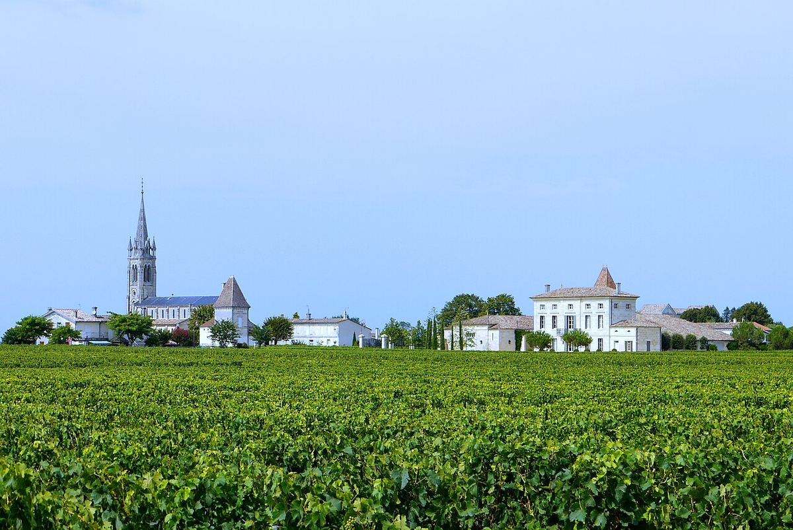

ROUGE
Pomerol est une petite appellation de la rive droite bordelaise, voisine de Libourne, consacrée à des rouges de merlot complétés par du cabernet franc. Elle n'a jamais eu de classement officiel, mais abrite certains des vins les plus recherchés de la région.

La vigne était déjà cultivée à Pomerol à l'époque romaine et, au Moyen Âge, les chevaliers hospitaliers de Saint-Jean de Jérusalem y possédaient une commanderie qui accueillait les pèlerins de Saint-Jacques-de-Compostelle. Pendant longtemps, toutefois, ses vins furent commercialisés dans l'ombre de ceux de Saint-Émilion, et Pomerol ne figure pas dans le classement de 1855, limité au Médoc, aux Graves et au Sauternais. L'appellation d'origine contrôlée fut reconnue en 1936. Sa renommée internationale est relativement récente : elle s'est affirmée surtout dans la seconde moitié du XXe siècle, sous l'impulsion des négociants de Libourne, ville portuaire située au confluent de la Dordogne et de l'Isle.
Pomerol est une petite zone presque entièrement couverte de vignes, sans véritable bourg en dehors de son église et de quelques hameaux dispersés. Elle est bordée à l'est par Saint-Émilion et au nord, de l'autre côté du ruisseau de la Barbanne, par Lalande-de-Pomerol. Le climat est océanique, comme sur le reste de la rive droite. Les sols forment un doux plateau où les meilleures parcelles associent graves et argiles ; vers l'ouest et le sud, en direction de Libourne, ils deviennent plus sableux. Le sous-sol renferme souvent une couche riche en oxydes de fer, appelée localement crasse de fer. Sur la partie la plus élevée affleure une argile bleutée très compacte, sur laquelle se trouve Pétrus.
La structure foncière est singulière : les domaines de petite taille, souvent familiaux, prédominent, et l'on n'y trouve pas les châteaux monumentaux du Médoc. Parmi les propriétés les plus connues figurent Pétrus, Le Pin, Vieux Château Certan, Château Lafleur, Château Trotanoy, Château L'Évangile et Château La Conseillante. Plusieurs d'entre elles produisent des volumes très limités, ce qui contribue à leur rareté sur le marché.
Contrairement à ses voisins, Pomerol n'a jamais établi de classement officiel de ses propriétés. La réputation de chaque vin dépend donc de son histoire et de la reconnaissance du marché, et non d'une hiérarchie administrative.
Le merlot est le cépage dominant, favorisé par les sols argileux qui retiennent l'eau et par sa maturité précoce. Il est complété par le cabernet franc et, en faible proportion, par le cabernet-sauvignon. L'appellation est réservée aux vins rouges. Les vins de Pomerol se distinguent par leur texture veloutée, leur fruit mûr et leurs tanins souples, même si les meilleurs conservent une structure qui leur permet d'évoluer pendant de longues années.